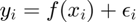
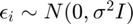
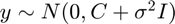

Marginal Likelihood
Given  where f is a Gaussian Process prior under a covariance function C and . The marginal of y is .
The code below shows the marginal likelihood of y for given hyperparameters. A 2-d grid will be generated at the end to see the optimality trend for various values of hyperparameters.
clear; %Data Reading and Initial Clearing data = csvread('utilities.csv',1,0); x = data(:,1); y = data(:,2)./data(:,3); %bill per day [x, idx] = sort(x); y = y(idx); n = length(y); tau2sq = 0; tau1sq_sweep = 15:100; b_sweep = 45:100; hyperparameters.tau2sq = tau2sq; covFunc = @CovSqExp; sigma = 1; mu = zeros(n,1); for i = 1:length(tau1sq_sweep) hyperparameters.tau1sq = tau1sq_sweep(i); for j = 1:length(b_sweep) hyperparameters.b = b_sweep(j); llog(i,j) = log( calc_likelihood(x, y, mu, covFunc, hyperparameters, sigma) ); end end %Extract Best Hyperparameter [val1, idx1] = max(llog); [val2, idx2] = max(val1); b_best = b_sweep(idx2); tau1sq_best = tau1sq_sweep(idx1(idx2)); xstar = sort(x); covFunc = @CovSqExp; res_new = gp_predict(x, y, xstar, covFunc, b_best, tau1sq_best, tau2sq, sigma); %Contour Plotting figure(1); contour(b_sweep, tau1sq_sweep, llog,30); hold on; scatter(b_sweep(idx2), tau1sq_sweep(idx1(idx2))); legend('contour lines', 'optimal point'); xlabel('b values'); ylabel('tau1sq values'); title('optimal point => b=61 ; tau1sq=39'); %Plot with Best Hyperparameter figure(2); scatter(x, y); hold on; plot(xstar, res_new.mean); sigmas = sqrt(diag(res_new.var)); CI_lb = res_new.mean - sigmas; CI_ub = res_new.mean + sigmas; hold on; plot(xstar, CI_lb); hold on; plot(xstar, CI_ub); title('Conf Interval with Optimal Hyperparameter')
Marginal Likelihood Function for calculating likelihood given input, output and hyperparameters
function res = calc_likelihood(x, y, mu, covFunc, hyperparams, sigma) n = length(mu); b = hyperparams.b; Tau1sq = hyperparams.tau1sq; Tau2sq = hyperparams.tau2sq; %Build covariance function for i = 1:n for j = 1:n C(i,j) = covFunc(x(i), x(j), b, Tau1sq, Tau2sq); end end C = C + sigma * eye(n); res = mvnpdf(y, mu, C); end
GP Function Definition
function res = gp_predict(x, y, xstar, covFunc, b, Tau1sq, Tau2sq, sigma) %Determine whether x is a vector or a matrix to determine the %dimensionality of the given data. if ~isvector(x) n1 = size(x,2); else n1 = length(x); end if ~isvector(xstar) n2 = size(xstar,2); else n2 = length(xstar); end %Calculate covariance matrixes where C is the covariance for observed %data; Cx is the covariance between the observed and prediction data %and Cxx is the covariance matrix between unobserved (prediction) data %input. for i = 1:n1 for j = 1:n1 C(i,j) = covFunc(x(i), x(j), b, Tau1sq, Tau2sq); end end for i = 1:n1 for j = 1:n2 Cx(i,j) = covFunc(x(i), xstar(j), b, Tau1sq, Tau2sq); end end CxT = transpose(Cx); for i = 1:n2 for j = 1:n2 Cxx(i,j) = covFunc(xstar(i), xstar(j), b, Tau1sq, Tau2sq); end end %Implement posterior solution for noisy observation. sigma shall be %zero if the observations are noise-free. noise = sigma*eye(n1); post_mean = CxT / (C + noise) * y; post_var = Cxx - (CxT / (C + noise)) * Cx; res.mean = post_mean; res.var = post_var; end
Covariance Functions
function res = CovSqExp(x1, x2, b, tau1sq, tau2sq) dist = norm(x1 - x2); kronecker = isequal(x1, x2); res = tau1sq * exp( -0.5 * (dist/b)^2 ) + tau2sq *kronecker; end function res = CovMat52(x1, x2, b, tau1sq, tau2sq) dist = norm(x1 - x2); kronecker = isequal(x1, x2); expterm = exp(-sqrt(5)*dist/b); taylorterm = 1 + sqrt(5)*dist/b + 5 * dist^2/(3*b^2); res = tau1sq*taylorterm*expterm + tau2sq*kronecker; end